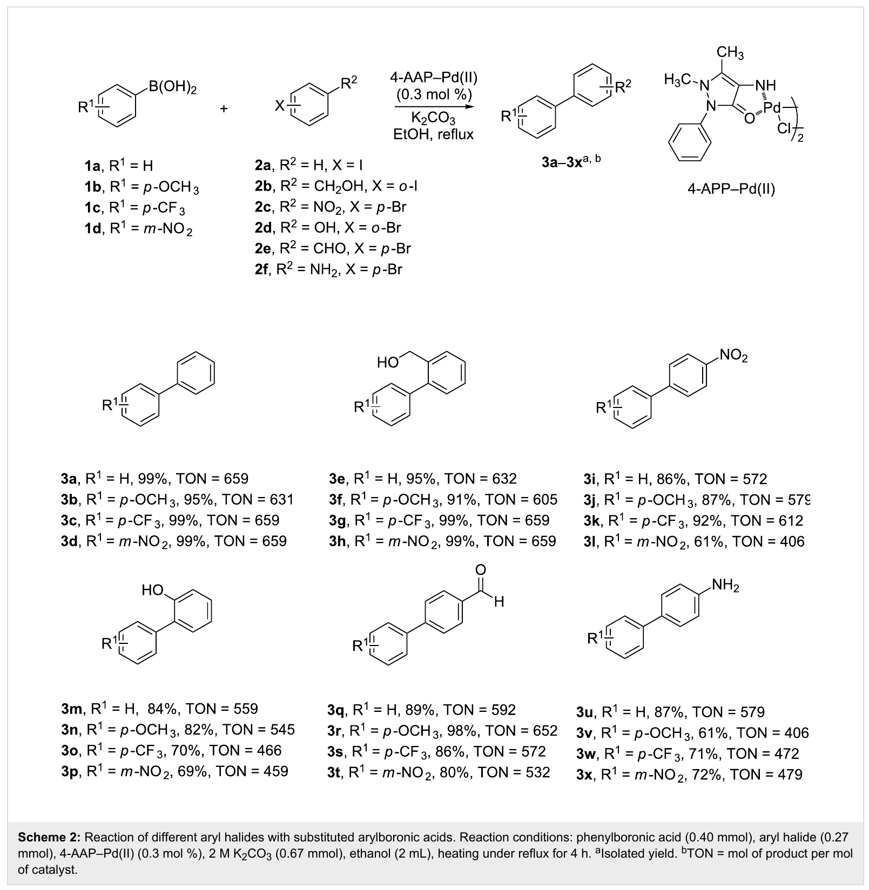
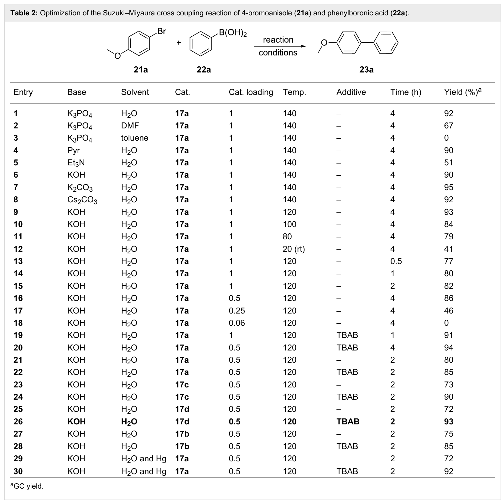
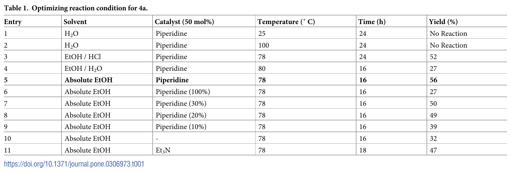
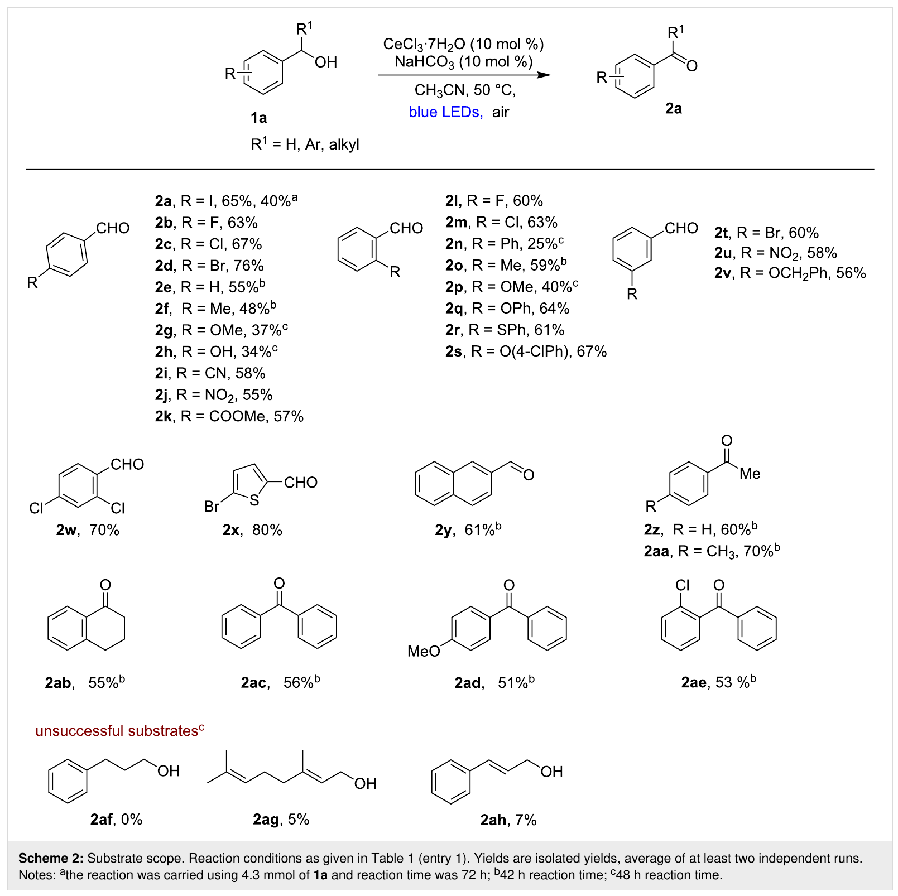
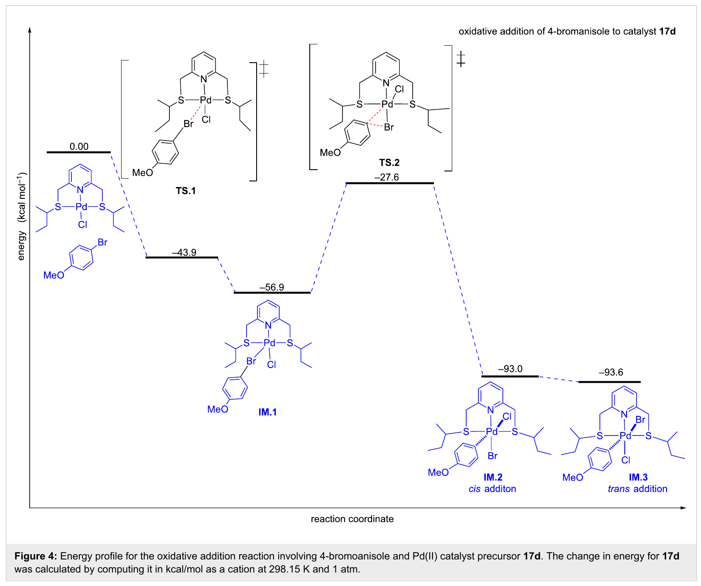
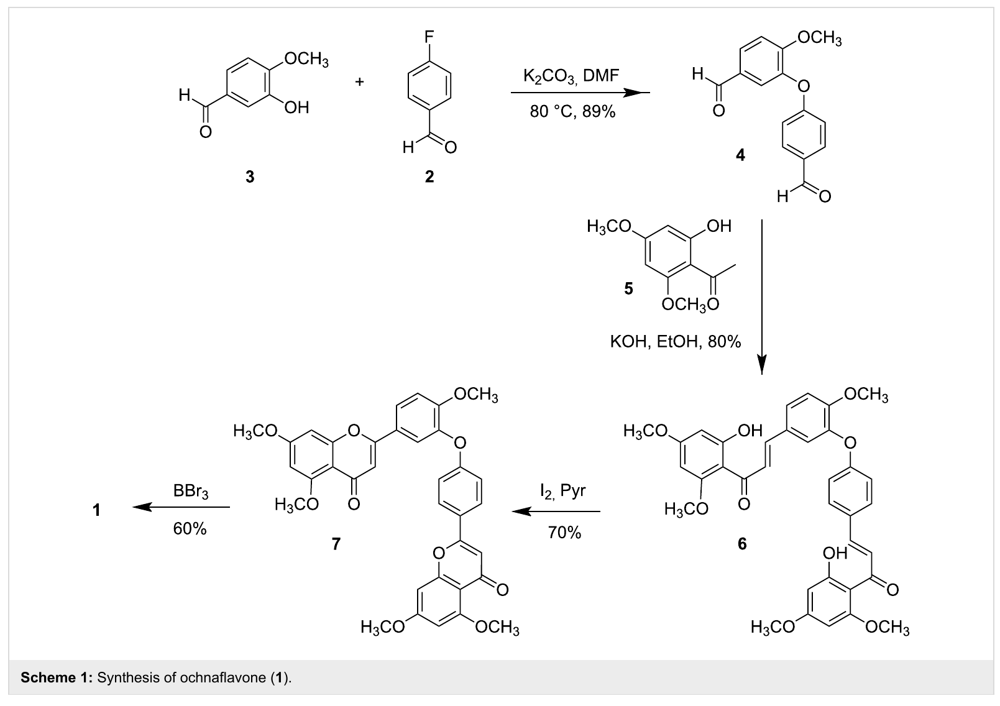
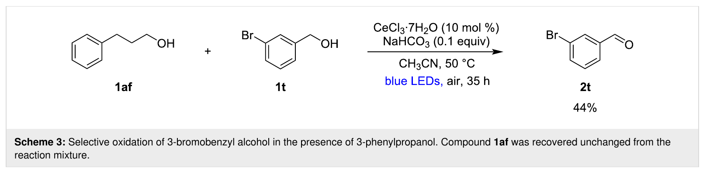
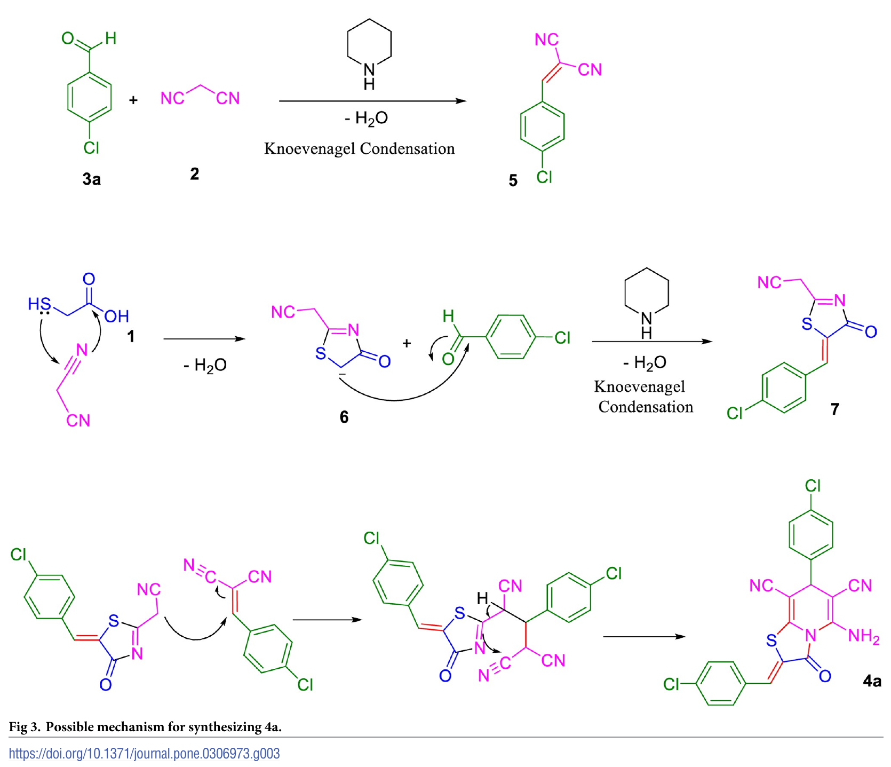

有机化学图稿评测
用 Agent 绘制
期刊图与表
在同一张图上核对化学结构、实验数据和排版。比较 Agent 直接写的 SVG、Chem Canvas 插件稿与论文原图。
- 文献案例
- 16
- 来源论文
- 8
- 只给数据的案例
- 4
Fiebor et al. · 2018Scheme 2
钯催化偶联的拟议机理循环查看评测 ↗
精选案例
全部 16 例

案例目录
按模型出图时看到的资料筛选。缩略图为论文原图，进入案例可切换稿件并逐项核对。

Table 1 · 2018苯乙烯双对甲苯磺酰氧化的区域选择性与 ee只给数据

Scheme 5 · 2024两条消除途径与四个 E/Z 烯烃只给数据

Table 2 · 2023批式氧化的八个时间点只给数据

反应机理 · 2018钯催化偶联的拟议机理循环看原图重绘 / 只给数据

底物范围 · 2014芳基卤化物与芳基硼酸的偶联范围看原图重绘

条件优化 · 2021苄醇光氧化的条件筛选看原图重绘

条件优化 · 2018水相 Suzuki–Miyaura 偶联的条件优化看原图重绘

条件优化 · 2024噻唑并吡啶衍生物的条件优化看原图重绘

底物范围 · 2021苄醇光氧化的底物范围看原图重绘

条件优化 · 2014Suzuki–Miyaura 偶联的溶剂和碱筛选看原图重绘

实验图表 · 2018钳形催化剂的三轮重复使用看原图重绘

能量剖面 · 2018氧化加成的计算能量剖面看原图重绘

多步路线 · 2013Ochnaflavone 的多步合成路线看原图重绘

选择性实验 · 2021两种醇竞争氧化的选择性实验看原图重绘

反应机理 · 2024噻唑并吡啶衍生物的拟议环化机理看原图重绘

光谱与机理 · 2021光照时间序列的吸收光谱与拟议机理看原图重绘